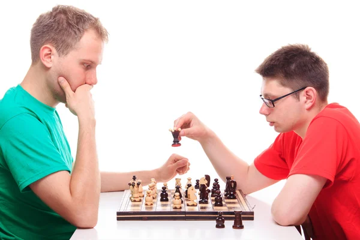

Jack's Brain Size:
Jack MacMurdo is an absolute genius, having an IQ of 145 according to iqtest.com, compared to Ritviks mere 127.
Coming in at around 1,300 cubic centimeters, Jack's Brain is an absolute unit, with a processing power equivalent to roughly 1 exaFLOP, and containing roughly 86 BILLION neurons.
Jack also has a chess elo of 1314 according to chess.com, compared to a 1674 by his rival Ritvik. However, Jack is the president of chess club and Ritvik is not.
